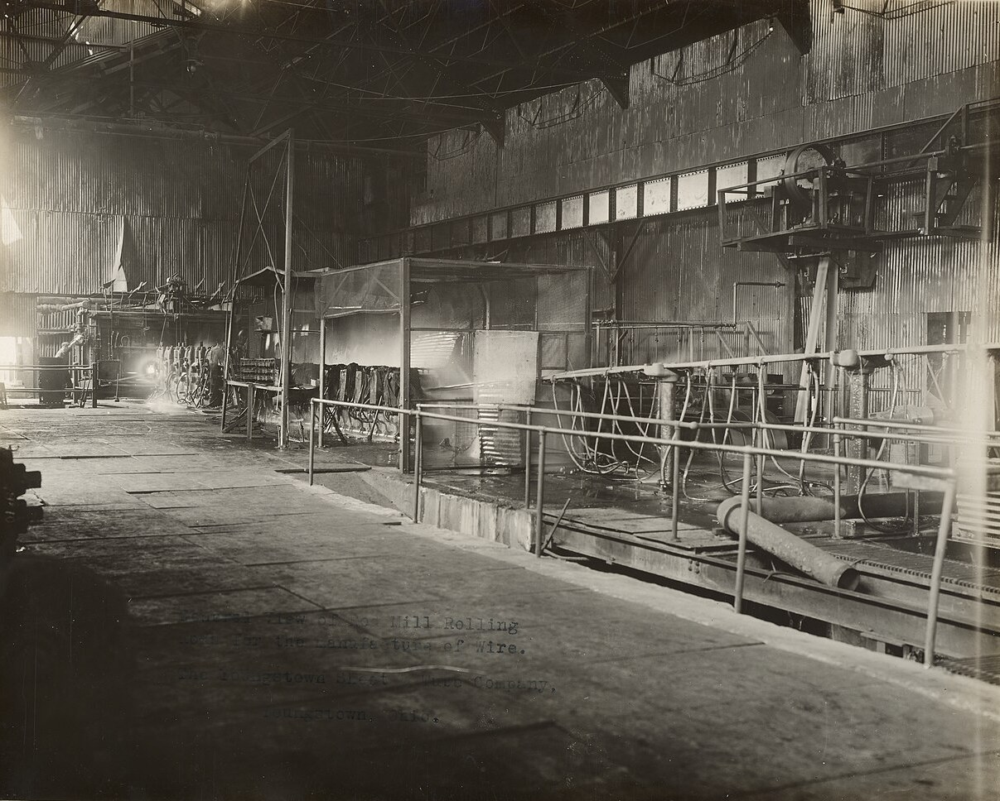
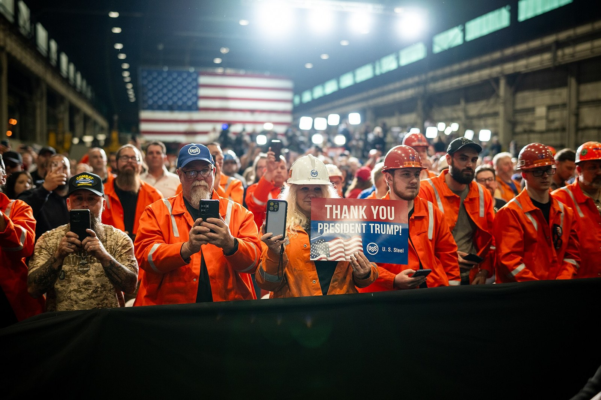

[250년 미국이야기⑤] 원주민 축출과 중남미 개입, 200년 이어진 먼로독트린
1979년 정점 1955만명에서 2026년 10월 1268만명, 687만명 감소
차이나 쇼크와 러스트벨트, 일자리 잃은 사람과 새 일자리 얻은 사람의 어긋남
2025년 5월 철강 관세 인상 발표 뒤 제조업 일자리 순증 3만명
AI경제저널=김갑봉 기자 | 미국은 왜 흔들리는가. 필자는 그 답의 출발점을 제조 역량을 잃은 데서 찾는다. 이 글은 그 진단을 받치는 숫자를 따라간다.
숫자는 셋이다. 1979년 6월 1955만명, 그 뒤 사라진 700만개 가까운 일자리, 반세기째 이어진 무역적자다. 미국 제조업 일자리는 이제 정점의 3분의 2에 못 미친다.
러스트벨트라 불리는 옛 공업지대가 그 흔적으로 남았다. 세계 최첨단 반도체의 90% 안팎은 타이완 기업 TSMC 한 곳이 만든다(클링글러비드라, 2026년·삭스, 2023년). 필자는 미국도 이 공급에 기대는 현실이 제조 역량을 바깥에 맡겨 온 흐름과 닿아 있다고 본다.
정점에서 사라진 687만개
미국 제조업 고용은 1979년 6월 1955만3000명으로 사상 최고를 찍었다. 그때 제조업은 비농업 고용의 22%를 차지했다. 그 뒤 2019년까지 경기침체를 다섯 번 겪는 동안 제조업 고용은 한 번도 침체 이전 수준을 되찾지 못했다(미 노동통계국, 2020년).
2026년 10월 제조업 고용은 잠정치로 1268만1000명이다. 정점보다 687만2000명 적다. 같은 달 비농업 고용 1억5929만3000명 가운데 제조업 몫은 8% 안팎이다(미 노동통계국, 2026년 11월 6일, 필자 계산).
더 긴 눈으로 보면 추락은 더 뚜렷하다. 제조업이 민간 고용에서 차지한 비중은 1960년 33.7%, 1990년 19.4%였고 2024년 말 9.3%로 내려앉았다(마르투·레, 2025년).
공장이 고용에서 차지하는 몫이 3분의 1 남짓에서 10%도 안 되게 줄었다. 필자는 제국이 밖에서 무너지기 전에 안에서 먼저 빈다고 보고, 그 빈자리가 가장 먼저 드러난 곳을 공장으로 본다.
소련이 해체된 1991년 12월 제조업 고용은 1691만7000명이었다. 1998년 3월 1763만7000명까지 늘었다가 2000년 이후 빠르게 줄어 금융위기가 터진 2008년 9월 1326만7000명이 됐다(미 노동통계국, 세인트루이스 연방준비은행 경제자료). 필자가 미국 일극으로 보는 17년 가까운 사이 순감소는 365만명이다.
미국 상품·서비스 무역수지는 1975년 흑자를 끝으로 1976년부터 2025년까지 해마다 적자였다. 2025년 적자는 9015억달러(약 1337조원)였다(미 인구조사국). 이 연재는 외화를 2026년 상반기 수준인 1달러 1483원으로 환산한다.
늘어난 공장, 더딘 일자리
그렇다고 끝없이 추락하기만 한 것은 아니다. 세인트루이스 연은 분석을 보면 제조업 사업체는 2014년 초 33만6000곳에서 2024년 4분기 40만1000곳으로 19% 늘었다.
고용은 더디게 회복해 분석 당시 수치로 2024년 말 1260만명 안팎이 됐다. 세인트루이스 연은은 사업체가 2014년 수준에 멈춰 있었다면 제조업 일자리가 200만개 적었으리라고 추산했다.
회복 내용을 뜯어보면 다르다. 지난 10년 제조업 고용 증가의 절반가량을 식품 제조업 한 업종이 이끌었다. 같은 기간 늘어난 제조업 사업체의 19%도 식품 업종이었다(마르투·레, 2025년).
공장 하나가 거느린 일자리 수도 다르다. 2024년 제조업 사업체 한 곳은 평균 32명을 고용했다. 소매업 사업장은 평균 15명이었고 부동산임대업 사업장은 5명이 안 됐다(마르투·레, 2025년). 필자는 사업장 하나가 거느린 일자리 수의 차이가 공장 하나를 잃은 지역이 크게 흔들리는 까닭 가운데 하나라고 본다.
다만 지난 10년 제조업 고용은 5% 늘어 사업체 증가 19%에 못 미쳤다. 세인트루이스 연은은 자동화가 퍼지며 사업체 한 곳당 평균 고용이 수십 년째 꾸준히 줄었다고 분석했다(마르투·레, 2025년).
차이나 쇼크와 러스트벨트
널리 연구된 충격 가운데 하나가 중국이다. 미니애폴리스 연은이 소개한 오터의 2013년 분석을 보면 1991년부터 2007년까지 중국산 수입액은 1156% 늘어 12배를 넘었다. 그 사이 중국이 2001년 세계무역기구에 들어갔다(미니애폴리스 연방준비은행, 2025년).
데이비드 오터와 데이비드 도른, 고든 핸슨은 이 충격을 차이나 쇼크라 불렀다. 세 학자는 차이나 쇼크가 노동시장이 무역 충격에 적응하는 방식을 두고 굳어 있던 실증 통념을 흔들었다고 봤다.
소비자는 이득을 봤지만 조정 비용과 분배 영향이 컸다. 충격을 받은 지역 임금과 경제활동참가율은 적어도 10년 동안 낮은 채 머물렀다(오터·도른·핸슨, 2016년).
규모를 추산한 연구도 있다. 대런 애스모글루와 오터 등은 1999년부터 2011년까지 중국산 수입 경쟁이 미국 일자리 200만~240만개를 없앴다고 추정했다. 산업 연관과 일반균형 경로를 거쳐 2000년대 미국 전체 일자리 증가를 짓눌렀다는 분석이다(애스모글루 외, 2016년).
충격의 방아쇠를 정책에서 찾은 연구도 있다. 저스틴 피어스와 피터 쇼트는 2000년 이후 미국 제조업 고용 급락을 중국산 수입에 관세를 올릴 가능성을 없앤 미국 무역정책 변화와 연결했다. 같은 정책 변화가 없던 유럽연합에서는 비슷한 반응이 나타나지 않았다(피어스·쇼트, 2016년).
상처는 러스트벨트에 몰렸다. 2000년 오하이오 제조업 종사자 비율은 24%로 미국 평균 14%를 크게 웃돌았다.
이후 9년 동안 오하이오 고용주가 주정부에 신고한 해고는 21만2000명에 이르렀다. 수입 충격이 심한 지역에서는 충격을 거의 받지 않은 지역에 견줘 제조업 노동자 일곱 명 가운데 한 명꼴이 일자리를 잃었다(순감소 기준)(미니애폴리스 연방준비은행, 2025년).
공업도시는 사람도 잃었다. 옛 제철도시 오하이오 영스타운 인구는 1950년 16만8330명에서 2025년 5만8832명으로 3분의 1 남짓만 남았다(미 인구조사국, 1998년·2026년 5월).
남은 주민 형편도 어렵다. 영스타운 주민 37.3%가 빈곤선 아래에 있다(2020~2024년 미국지역사회조사 5년 추정, 미 인구조사국 퀵팩츠).

돌아오지 않는 사람들
타격이 심한 지역도 시간이 지나며 전체 고용은 회복했다. 그러나 밀려난 노동자가 옛 일자리로 돌아간 경우는 드물었다. 2011년까지 병원과 요양원, 초중등학교 등에서 늘어난 일자리가 제조업에서 잃은 일자리를 메웠다(미니애폴리스 연방준비은행, 2025년).
문제는 그 자리에 앉은 사람이 밀려난 사람과 달랐다는 데 있다. 충격이 큰 지역 노동자는 제조업 노동자까지 포함해 충격이 적은 지역보다 다른 지역 일자리로 옮겨 가는 비율이 낮았다. 새 자리는 새로 노동시장에 들어온 젊은이(다수가 미국 태생 히스패닉)와 일자리가 없다가 취업한 성인(상당수가 해외 태생 히스패닉)이 채웠다(미니애폴리스 연방준비은행, 2025년).
경제학자들은 떠나지 않는 까닭으로 가족·친구 유대와 경제적 제약을 들면서, 이 논문에서 검증하지는 못했다고 덧붙였다. 경제적 제약은 집을 팔고 다른 곳에서 새집을 사기 어려워 그대로 머무는 편이 싸다는 설명이다.
충격이 큰 지역으로 들어오는 사람이 적어 집 살 사람도 많지 않았다. 오하이오 북동부 대도시권 집값은 2001년부터 2008년까지 8% 오르는 데 그쳤고 같은 기간 미국 전체는 44% 올랐다(미니애폴리스 연방준비은행, 2025년).
일자리 성격도 달랐다. 사라진 제조업 일자리는 거의 다 대졸 미만 노동자 몫이었다. 무역이 늘린 일자리의 95%가량은 대졸자에게 갔다.
같은 글을 보면 늘어난 일자리의 62%가량은 임금이 하위 3분의 1에 속했다. 2000~2019년 자료로 보면 충격이 컸던 지역은 고용 수준이 회복됐어도 인구 대비 취업 비율이 반등하지 않았다(미니애폴리스 연방준비은행, 2025년).
반대쪽 분석도 있다. 미니애폴리스 연은 경제학자 마이클 워는 차이나 쇼크가 미국 전체로는 일자리를 약 150만개 늘리고 총소비를 1%포인트가량 키웠다고 분석했다.
같은 글은 중국산 중간재를 들여온 업종의 일자리 증가가 무역으로 잃은 일자리보다 컸다는 2018년 연구도 소개했다(미니애폴리스 연방준비은행, 2025년). 필자는 이 기록에서 무역이 나빴다는 결론보다 잃은 쪽과 얻은 쪽이 같은 사람도, 같은 지역도 아니었다는 사실을 본다.
관세로 되돌릴 수 있을까
트럼프 대통령은 2025년 5월 30일 펜실베이니아 웨스트미플린 US스틸 어빈 공장의 US스틸·일본제철 협력 행사에서 연설하며 철강 관세를 25%에서 50%로 올리겠다고 밝혔다. 관세 인상을 밝힌 그달 제조업 고용은 1265만1000명이었다(미 노동통계국).

1년 5개월 뒤인 2026년 10월 제조업 고용은 한 달 새 1만9000명 늘었다. 최근 저점인 2025년 12월보다 10만1000명 많다. 컴퓨터·전자제품이 7000명, 기계와 1차 금속이 4000명씩 늘었다(미 노동통계국, 2026년 11월 6일).
노동통계국은 제조업 고용이 증가 추세를 이어 갔다고 밝혔다. 같은 10월 비농업 고용은 16만5000명 늘었고 제조업이 그 가운데 1만9000명(11.5%, 필자 계산)을 보탰다.
기준점을 바꾸면 반등 폭이 달라진다. 제조업 고용은 2025년 5월 뒤 12월 1258만명까지 7만1000명 줄었다가 2026년 10월 1268만1000명이 됐다. 2025년 5월과 견주면 3만명 많다(필자 계산). 노동통계국 발표는 이 증가가 관세 때문인지 밝히지 않았다.
국내 연구는 다른 각도를 보탠다. 최혜린과 이수영, 박민숙은 미국과 유럽, 타이완 리쇼어링을 분석해 리쇼어링이 기존 오프쇼어링을 대체하는 현상으로 보기는 어렵다고 결론지었다.
리쇼어링 주요 요인으로는 개도국 임금 상승과 품질 관리 부담, 낮은 신기술 접근성을 들었다. 다만 2020년 연구라 이번 관세는 다루지 않았다(최혜린·이수영·박민숙, 2020년). 미국이 관세로 공장을 끌어당길 때 한국 공장 자리에 어떤 영향을 받을지는 이 연재 뒤에서 따진다.
옷과 전자제품을 잃은 40년
공동화는 빠르게 진행됐다. 제조업이 미국 고용에서 차지하는 몫은 2000년 14.2%에서 2019년 9.2%로 떨어져 3분의 1이 깎였다(미니애폴리스 연방준비은행, 2025년).
이 글에 나온 비중은 분모가 저마다 다르다. 22%와 8%는 비농업 고용, 33.7%와 9.3%는 민간 고용을 분모로 삼은 값이다. 14.2%와 9.2%는 미니애폴리스 연은이 미국 고용 비중으로 제시한 값이다.
충격은 몇몇 업종에 몰렸다. 무역 탓에 사라진 제조업 일자리의 90% 넘게 아홉 개 업종에서 나왔다. 섬유, 섬유제품, 의류, 가죽, 플라스틱과 고무, 컴퓨터와 전자제품, 가구, 전기장비, 기타 내구재다(미니애폴리스 연방준비은행, 2025년).
업종별로 40년을 재 보면 파인 자리가 드러난다. 1979년 6월부터 2019년 6월까지 의류와 섬유는 일자리의 81%를, 컴퓨터·전기제품(전자제품과 전기장비를 합친 업종)은 43%를 잃었다. 이 업종에서는 1990년 1월부터 2019년 6월까지만 110만개 넘게 사라졌다(미 노동통계국, 2020년).
같은 40년 동안 식품 제조업 일자리는 약 8% 늘었다. 제조업 세부 업종 가운데 일자리가 늘어난 곳은 식품뿐이었다(미 노동통계국, 2020년). 필자는 노동통계국 자료와 세인트루이스 연은 자료를 겹쳐 옷과 전자제품 일자리가 크게 줄고 먹거리 일자리가 남은 흐름으로 읽는다.
만드는 힘이 남긴 것
미국 제조업 고용은 정점보다 700만명 가까이 줄었다. 비농업 고용에서 차지하는 비중은 1979년 22%에서 2026년 10월 8% 안팎으로 내려앉았다. 충격이 컸던 지역에서는 20년 가까이 지나서도 인구 대비 취업 비율이 반등하지 않았다.
제조업 고용은 2025년 12월 저점 뒤 10만1000명 늘었다. 철강 관세 인상을 밝힌 달과 견주면 3만명 많다. 필자는 러스트벨트 기록을 일자리 수가 돌아와도 밀려난 사람의 자리는 돌아오기 어렵다는 증거로 읽는다.
최근 반등이 관세 효과인지는 아직 가릴 수 없다고 필자는 본다. 일자리가 줄어든 것이 패권과 어떻게 이어지는지는 이 연재 뒤에서 따진다.
(이 연재는 단행본으로 준비 중인 『250년 미국이야기』 원고를 AI경제저널에 맞게 고쳐 싣는다. 고용 수치는 2026년 11월 6일 발표까지의 기록이다.)
참고문헌
- 데이비드 H. 오터(David H. Autor)·데이비드 도른(David Dorn)·고든 H. 핸슨(Gordon H. Hanson), "The China Shock: Learning from Labor-Market Adjustment to Large Changes in Trade", 『Annual Review of Economics』 8권, 205~240쪽, 2016년. DOI 10.1146/annurev-economics-080315-015041. https://doi.org/10.1146/annurev-economics-080315-015041
- 대런 애스모글루(Daron Acemoglu)·데이비드 오터(David Autor)·데이비드 도른(David Dorn)·고든 H. 핸슨(Gordon H. Hanson)·브렌던 프라이스(Brendan Price), "Import Competition and the Great US Employment Sag of the 2000s", 『Journal of Labor Economics』 34권 S1호, S141~S198쪽, 2016년 1월. DOI 10.1086/682384. https://doi.org/10.1086/682384
- 저스틴 R. 피어스(Justin R. Pierce)·피터 K. 쇼트(Peter K. Schott), "The Surprisingly Swift Decline of US Manufacturing Employment", 『American Economic Review』 106권 7호, 1632~1662쪽, 2016년 7월. DOI 10.1257/aer.20131578. https://doi.org/10.1257/aer.20131578
- 최혜린·이수영·박민숙, 「미국, 유럽, 대만의 리쇼어링 현황과 정책에 대한 분석」, 『한국경제학보』 27권 2호, 99~137쪽, 연세대학교 경제연구소, 2020년. https://www.kci.go.kr/kciportal/ci/sereArticleSearch/ciSereArtiView.kci?sereArticleSearchBean.artiId=ART002667163
- 리카르도 마르투(Ricardo Marto)·호앙 레(Hoang Le), "The Sluggish Renaissance of U.S. Manufacturing", 세인트루이스 연방준비은행 『On the Economy』, 2025년 8월 12일. https://www.stlouisfed.org/on-the-economy/2025/aug/sluggish-renaissance-us-manufacturing
- 미니애폴리스 연방준비은행(Federal Reserve Bank of Minneapolis), 리사 캠너 매케이(Lisa Camner McKay), "Old jobs, new jobs: How the labor landscape has changed two decades after trade with China opened", 2025년 5월 19일. https://www.minneapolisfed.org/article/2025/old-jobs-new-jobs-how-the-labor-landscape-has-changed-two-decades-after-trade-with-china-opened
- 미 노동통계국(U.S. Bureau of Labor Statistics), 케이틀린 해리스(Katelynn Harris), "Forty years of falling manufacturing employment", 『Beyond the Numbers』 9권 16호, 2020년 11월. https://www.bls.gov/opub/btn/volume-9/forty-years-of-falling-manufacturing-employment.htm
- 미 노동통계국(U.S. Bureau of Labor Statistics), "The Employment Situation - October 2026" · "Table B-1. Employees on nonfarm payrolls by industry sector and selected industry detail", 2026년 11월 6일. https://www.bls.gov/news.release/empsit.nr0.htm · https://www.bls.gov/news.release/empsit.t17.htm
- 미 노동통계국(U.S. Bureau of Labor Statistics), "All Employees, Manufacturing(MANEMP)", 월별 계절조정 계열, 세인트루이스 연방준비은행 경제자료(FRED). https://fred.stlouisfed.org/series/MANEMP
- 미 인구조사국(U.S. Census Bureau), "U.S. Trade in Goods and Services - Balance of Payments(BOP) Basis", 1960~2025년 역사표. https://www.census.gov/foreign-trade/statistics/historical/gands.pdf
- 미 인구조사국(U.S. Census Bureau), "Population of the 100 Largest Urban Places: 1950", 워킹페이퍼 POP-WP027 표18, 1998년 6월 15일 · "City and Town Population Totals: 2020-2025(Vintage 2025)", 2026년 5월 14일 · "QuickFacts: Youngstown city, Ohio"(빈곤 비율은 2020~2024년 미국지역사회조사 5년 추정). https://www2.census.gov/library/working-papers/1998/demo/pop-twps0027/tab18.txt · https://www2.census.gov/programs-surveys/popest/datasets/2020-2025/cities/totals/sub-est2025_39.csv · https://www.census.gov/quickfacts/fact/table/youngstowncityohio/PST045225
- 데이비드 삭스(David Sacks), 미 외교협회(Council on Foreign Relations), "Will China's Reliance on Taiwanese Chips Prevent a War?", 2023년 7월 6일. https://www.cfr.org/articles/will-chinas-reliance-taiwanese-chips-prevent-war
- 로빈 클링글러비드라(Robyn Klingler-Vidra), 킹스칼리지런던(King's College London) 기고, "COMMENT: How Taiwan came to dominate the global chip industry", 2026년 4월 7일 게시(더 컨버세이션 재게재). https://www.kcl.ac.uk/news/comment-how-taiwan-came-to-dominate-the-global-chip-industry
- 크리스 포터(Chris Potter, 90.5 WESA), WVIA, "In West Mifflin, Trump doubles tariffs but offers few details on U.S. Steel, Nippon 'partnership'", 2025년 5월 31일. https://www.wvia.org/news/pennsylvania-news/2025-05-31/in-west-mifflin-trump-doubles-tariffs-but-offers-few-details-on-u-s-steel-nippon-partnership
사진 출처
- [사진1] 미 국립문서기록관리청(National Archives), 「Industries of War - Barbed Wire - MANUFACTURING BARBED WIRE, Wire and Wire Nails, at the Youngstown Sheet and Tube Co., Youngstown, Ohio. General view of rod mill rolling rods for the manufacture of wire」, 사진 카드 표기 「From Youngstown Sheet and Tube Co.」·1918년 9월 접수, 전쟁부 기록(기록군 165, 자료번호 31485991, 카드번호 165-WW-189C-11), 촬영·제공 영스타운 시트앤튜브사(NARA 목록 Photographer: Youngstown Sheet and Tube Co., 카드 표기 From Youngstown Sheet and Tube Co.), 이용 제한 없음(Unrestricted), 공공영역. 게재본은 카드 테두리를 잘라 사진 부분만 실음. https://catalog.archives.gov/id/31485991
- [사진2] 대니얼 토록(Daniel Torok), 백악관(The White House), 「P20250530DT-0384 President Donald Trump delivers remarks on a partnership deal for U.S. Steel in Pennsylvania」, 2025년 5월 30일, 공식 백악관 사진, 공공영역. 위키미디어 공용 게재본(원출처 백악관 플리커 54561994257). https://commons.wikimedia.org/wiki/File:P20250530DT-0384_President_Donald_Trump_delivers_remarks_on_a_partnership_deal_for_U.S._Steel_in_Pennsylvania.jpg
관련기사
- [250년 미국이야기①] 역사의 저울로 미국 250년을 잰다
- [250년 미국이야기②] 석유로 선 미국 250년, 다섯 축이 한자리에서 꺾인다
- [250년 미국이야기③] 미국 유럽 러시아 중국의 250년, 세계 생산의 저울은 두 번 기울었다
- [250년 미국이야기④] 천조국 패권의 일곱 기둥과 무너진 제조업
- [250년 미국이야기⑤] 원주민 축출과 중남미 개입, 200년 이어진 먼로독트린
저작권자 © AI경제저널 무단전재 및 재배포, AI학습 및 활용 금지